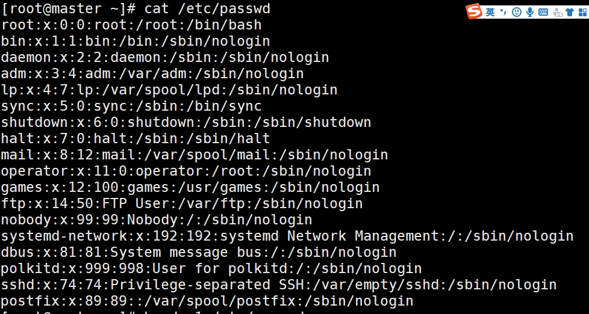

背景介绍 GNU的简介 GNU 于1983年由Richard Stallman（RMS）发起，意在为所有软件用户能够自由控制自己的计算而构建一款由大家共同努力开发而成的操作系统。RMS今天仍然是GNU的首席搞事者。
GNU/Linux的简介 GNU/Linux 是一种计算机操作系统：一系列能让您与计算机进行交互操作并运行其它程序的程序。
GNU/Linux 是以 Unix 操作系统为原型创造的。自从诞生之日起，它就被设计成一种多任务、多用户的系统。这些特点使 GNU/Linux 完全不同于其它著名的操作系统。事实上，GNU/Linux 比您所能想象到更加特别。与其它操作系统绝然相反的是，没人真正拥有 GNU/Linux，其大部分开发工作都是由无偿的志愿者完成的。
Linux 内核 的首次面世是在 1991 年。当时，名为 Linus Torvalds 的芬兰计算机科学系学生在 Usenet 新闻组 comp.os.minix 上发布了一种 Minix 替代内核的早期版本。请看 Linux International 的 Linux 历史。
服务器类型
常用命令 命令语法：命令 选项 参数
网络 ip a #查看ip nmcli connection down enp0s3 && nmcli connection up enp0s3 ——重启网卡enp0s3 ping www.baidu.com #向某个网址发送请求，检查网络是否通畅
主机 hostnamectl set-hostname 主机名 #设置主机名
软件下载 dnf -y install 软件名 #下载软件 yum -y install 软件名 #下载软件
登陆 进程 帮助命令 命令名 --help #获取帮助信息 man 命令名 #获取帮助信息。manual watch -n2 'ls /root' #每过2秒去执行引号里面的内容
查找命令 查看终端 查看内存 free -m #以兆为单位 free -k #以kB为单位 free -g #以G为单位
倒计时 sleep n #n秒倒计时 sleep n & #n秒倒计时，后台运行
文件和用户管理 目录结构 Linux一切皆是文件。Linux 的一切资源都放在 / 根目录下。
/bin：Binary的缩写。存放系统命令，普通用户和 root 都可以执行。
/boot： 启动 Linux 时使用的一些核心文件，包括一些连接文件以及镜像文件。
/dev： Device的缩写。存放的是 Linux 的外部设备，在 Linux 中访问设备的方式和访问文件的方式是相同的。
/etc： Etcetera的缩写。存放所有的系统管理所需要的配置文件和子目录。
/home： 用户的主目录，在 Linux 中，每个用户都有一个自己的目录，一般该目录名是以用户的账号命名的。
/root： 该目录为系统管理员，也称作超级权限者的用户主目录。
/run： 运行目录。是一个临时文件系统，存储系统启动以来的信息。当系统重启时，这个目录下的文件应该被删掉或清除。如果你的系统上有 /var/run 目录，应该让它指向 run。
/sbin： s 就是 Super User 的意思，是 Superuser Binaries (超级用户的二进制文件) 的缩写，这里存放的是系统管理员使用的系统管理程序。
/lib： Library的缩写。这个目录里存放着系统最基本的动态连接共享库，其作用类似于 Windows 里的 DLL 文件。几乎所有的应用程序都需要用到这些共享库。
/lib64： 64位相关的库会放在这。
/media： linux 系统会自动识别一些设备，例如U盘、光驱等等，当识别后，Linux 会把识别的设备挂载到这个目录下。
/mnt： 系统提供该目录是为了让用户临时挂载别的文件系统的，我们可以将光驱挂载在 /mnt/ 上，然后进入该目录就可以查看光驱里的内容了。
/opt： optional的缩写。这是给主机额外安装软件所摆放的目录。
/proc： Processes的缩写。/proc 是一种伪文件系统（也即虚拟文件系统），存储的是当前内核运行状态的一系列特殊文件，这个目录是一个虚拟的目录，它是系统内存的映射，我们可以通过直接访问这个目录来获取系统信息。这个目录的内容不在硬盘上而是在内存里。
/srv： 该目录存放一些服务启动之后需要提取的数据。
/sys： 虚拟文件系统。和 /proc/ 目录相似，该目录中的数据都保存在内存中，主要保存与内核相关的信息。
/tmp： temporary的缩写这个目录是用来存放一些临时文件的。
/usr： unix system resources缩写。用于存储系统软件资源。
/var： 用于存储动态数据，例如缓存、日志文件、软件运行过程中产生的文件等。这些日志就被记录到这个目录下，具体在 /var/log 目录下，另外 mail 的预设放置也是在这里。
/lost+found： 这个目录一般情况下是空的，当系统非法关机后，这里就存放了一些文件。
/selinux：这个目录是 Redhat/CentOS 所特有的目录，Selinux 是一个安全机制，类似于 windows 的防火墙，但是这套机制比较复杂，这个目录就是存放selinux相关的文件的。
/usr/bin：系统用户使用的应用程序。
/usr/sbin：超级用户使用的比较高级的管理程序和系统守护程序。
/usr/src：内核源代码默认的放置目录。
文件类型
普通文件： - 表示
文件夹：d 表示
设备文件（块设备）存储设备硬盘，U盘/dev/sda，/dev/sda1等：b 表示
设备文件（字符文件）打印机，终端/dev/tty1等：c表示
链接文件（淡蓝色）：l 表示
套接字文件：s 表示
管道文件：p 表示
与文件相关的命令 ls #列出目录下的文件 ls -l #列出详细信息 ls -a #列出所有文件，隐藏文件 ls -d #查看文件夹的信息 cd 目录 #切换目录 pwd #打印当前路径 touch 文件路径 #用于修改文件或者目录的时间属性，包括存取时间和更改时间。若文件不存在，系统会建立一个新的文件 touch /home/{a,b}.txt ##在home下创建a.txt和b.txt mkdir 文件夹路径 #创建文件夹 mkdir -p 文件夹路径 #确保目录名称存在，不存在的就建一个。 mkdir /home/{dir1,dir2} #在home下创建dir1和dir2 mkdir -v 文件夹路径 #显示创建的过程 cp 源文件 目标文件夹或者目标文件 # 复制源文件到目标文件夹或者目标文件 cp -r 源文件夹 目标文件夹 # 递归复制源文件夹到目标文件夹 mv 源文件路径 目标文件路径 #把源文件移动到目标路径，当源和目标的路径一致时，其效果就是改变文件名字 rm -rf 文件或目录的路径 #强制删除文件或者文件夹 cat 文件路径 #查看文件内容 cat -n 文件路径 #带编号查看文件内容 more 文件路径 #查看文件内容，带翻页 head -n 文件路径 #查看文件前n行 tail -n 文件路径 #查看文件后n行 grep 内容 文件路径 #过滤文件内容 > ls -l > a.txt > > ls -l >> a.txt gedit 文件名 #linux的文本编辑器 vi/vim 文件路径 #vim是vi的升级版 i #进入输入模式 a #进入输入模式，光标移动一个字符 o #进入输入模式。光标换行 esc #进入命令行模式 : #命令行模式下进入末尾模式 :wq #保存文件退出 :q! #强制退出不保存 :set nu #显示行号 :set list #显示控制字符 :set nonu #取消设置行号 :w #保存 :q #退出 :n,m s/原内容/新内容/g #把第n到m行的所有的原内容替换成新内容，g是全局 :w/tep/a.txt #另存为/tem/a.txt v #命令行模式下进入可视模式 ，可对字符进行选择，类似于鼠标选东西 yy # 复制一行 p # 粘贴一行 dd #删除一行 nyy #复制n行 ndd #删除n行 u #撤销操作 x #删除某个字符 # hjkl #上下左右 0 #进入行首 $ gg #进入页首 G #进入页尾 nG或者ngg #进入第n行 /string #末行模式下查找string，用n进行选择下一个，用N往上翻 vim未正常关闭所产生的临时文件.swap文件，删除.swap文件就可以 . #当前目录 .. #上一级目录
与用户和组相关的基本知识 所有的进程和文件都是属于用户的
用户基本信息文件 /etc/passwd
用户名
密码占位符
uid
gid
描述
HOME
shell
root
x
0
0
root
/root
/bin/bash

用户密码文件 /etc/shadowHuang:$6$iNeHX:19818:0:99999:7:::
组信息文件 /etc/group
与用户相关的命令 useradd user01 #创建用户user01 useradd user02 -u 1506 #创建用户并指定uid useradd user02 -d 目录 #创建用户并指定家目录 id user01 #查看user01 passwd user01 #为user01添加或修改密码 userdel -r user02 #删除user02并删除家目录 usermod #修改用户的模式 usermod -s /sbin/nologin user01 #修改登录shell，user01无法登录 whoami #查看当前用户是谁
与组相关的命令 一个用户可以在多个组中，一个组可以拥有多个用户
组的类型 相对于用户zhangsan来说，他加入了zhangsan组，lisi组和wangwu组
基本组：随用户而创建，组名同用户，只能有一个，zhangsan组，可以在/etc/passwd中看到。
附加组：用户加入的其他组，lisi组和wangwu组。groupadd group01 #创建组group01 groupadd group02 -g 2000 #创建组group02，并且组id为2000 groupdel group02 #删除组group02 -u 制定用户的uid -g 制定用户的基本组 -G 制定用户的附加组 /etc/passwd 可以看用户的基本组 /etc/group 可以查看用户的附加组。id命令也可以看 usermod AAA -g CCC #修改用户AAA的基本组为CCC usermod BBB -G CCC #修改用户BBB的附加组为CCC gpasswd -d BBB CCC #将用户BBB从组CCC中删除
用户的提权 当普通用户需要更多的权利去执行某些任务时，需要提权。
su #普通用户使用su切换到root身份 su - root #切换到root用户 su - 用户名 #切换到某个用户 exit #退出 sudo #使用普通用户时，使用sudo完成部分特权指令 用户名 主机名=命令 #给用户赋予特定的命令，可以在vim /etc/sudoers进行编辑 # AAA localhost=/usr/sbin/useradd, /usr/sbin/userdel #赋予普通用户使用useradd和userdel命令 sudo useradd u1 #普通用户使用sudo创建用户
用户的权限 基本权限UGO
属主：u
属主：g
其他人：o
特殊对象：所有人：a(u+g+o)
权限的种类
读：r=4
写：w=2
执行：x=1-rw-r--r--. 1 root root 0 Apr 6 16:34 1.txt 第1个：-表示为文件 第2-4：rw-为属主权限为可读可写 第5-7：r--为属组权限为可读 第8-10：r--为其他人的权限为可读 第11列：.开启了SELinux功能的Linux系统才会有这个点。那个点表示文件带有“SELinux的安全上下文”。CentOS7默认是开启SELinux的，所以会有这个点，如果关闭SELinux，然后再创建文件，新创建的文件就不会再有这个点了，但是以前创建的文件本来有这个点的还会显示这个点（虽然SELinux不起作用了），如果为+号，表明该文件设置了acl权限。 第12:1 表示链接数 第13：root 属主 第14：root 属组 第15: 0 文件大小，Byte（字节）为单位 第16：Apr 6 16:34 创建时间 第17：1.txt 文件名 语法：chmod 对象(u/g/o/a)赋值符(+/-/=)权限(r/w/x) 文件/目录 chmod u+r 1.txt #为文件1.txt的属主添加读权限 chmod u-r 1.txt #为文件1.txt的属主取消读权限 chmod u+wx 1.txt #为文件1.txt的属主添加读写权限 chmod u=rwx 1.txt #为文件1.txt的属主设置读写执行权限 chmod u=rw 1.txt #为文件1.txt的属主设置读写权限 chmod u= 1.txt #取消文件1.txt的属主的所有权限权限 chmod u=--- 1.txt #取消文件1.txt的属主的所有权限权限 chmod ug=rw, o=r 1.txt #为1.txt的属主设置读写权限，其他读权限 chmod -R u+r dir1 #为文件夹dir1及其里面文件的属主添加读权限 chmod 671 1.txt# 为1.txt的属主设置读写权限，属组设置读写执行权限，其他人是执行权限 注意：问件夹一定要有可执行的权利，因为进入文件夹是执行。
文件的归属 chown alice.hr file1 #改file1的属主为alice改组为hr组 chown alice file1 #改file1的属主为alice chown .hr file1 #改file1的组为hr组 chown alice.hr dir1 #改文件夹dir1的属主为alice改组为hr组 chown -R alice.hr dir1 #改文件夹dir1的属主为alice改组为hr组，把文件夹里面的内容都改为属主为alice改组为hr组 .号可以换成: chown alice:hr file1 #改file1的属主为alice改组为hr组 chgrp root file1 #改file1的组为root
ACL(access control list) 访问控制列表 核心就是：谁干什么，谁不能干什么，设置不同用户，不同的基本权限（r,w,x）。对象数量不同。是UGO的补充。
# 语法 setfacl -设置 对象:对象名:权限 getfacl 文件或文件夹 #查看文件或者文件夹的acl权限 setfacl -m u:Huang:rw 1.txt#设置用户Huang对1.txt有读写权限 -m是设置 setfacl -m u:Huang:- 1.txt#设置用户Huang对1.txt没有任何权限 -m是设置 setfacl -m o::w 1.txt#设置其他用户对1.txt有写的权限 -m是设置 看到 setfacl -x u:Huang 1.txt#取消用户Huang的acl权限 -x是删除 setfacl -b 1.txt#取消1.txt的所有acl权限 -b是删除所有
特殊权限
如果一个文件很重要，那么他万一被root删除了怎么办。就要靠特殊的i权限。
有一个权限为rwsrwxrwx，有一个s权限
为什么系统创建文件是默认权限是644，创建文件夹时权限为755。这是系统为了好管理进行这样设计的，进入文件夹需要x的执行权限。
suid(sgid)针对文件/程序时，具备临时提升权限的能力，使得调用文件的用户，临时具备属主的能力，谁访问，就当这个用户是属主。chmod u+s /bin/cat -rwsr-xr-x. 1 root root 54080 Aug 20 2019 /bin/cat 属主的执行位变成了s，我们就具有使用cat命令的属主能力了 chmod u+s 1.txt -rwSrwx--x. 1 root root 12 Apr 7 11:33 1.txt 变成了S，其主要原因是该文件最开始没有x权限，因此会变成S，添加了x群贤后，就会变成s了。 chmod 4777 1.txt #将会使得使得调用文件的用户，临时具备属主的能力，数字4与suid相同 chmod 2777 1.txt #将会使得使得调用文件的用户，临时具备属组的能力，数字2与sgid相同 chmod 1777 1.txt #将会使得当前目录或当前文件只有主人可以删除，数字1就是粘滞位，其他的执行位变成t，一般是给文件夹的。
文件属性chattr
用途：通常用于锁定某个文件，拒绝修改
分类有a，A，c，d，D，i等，常用的就在i，i用于锁定文件拒绝修改lsattr 1.txt #查看文件属性 [root@master tmp]# lsattr 1.txt ---------------- 1.txt chattr +i 1.txt #添加i属性 [root@master tmp]# lsattr 1.txt ----i----------- 1.txt # 无法修改1.txt chattr -i 1.txt #去掉i属性 chattr +a 1.txt #添加a属性，文件只能追加
概念：新建文件，目录的默认权限会受到umask的影响，umask表示要减掉的权限。
观察系统的掩码umask #查看系统的掩码 [root@master tmp]# umask 0022 #有四位，第一位就是那么特殊位 0777 - 0022 # 系统创建目录和文件夹时，权限就是0755 0755 - 0111 #系统为了保护自己，所以在创建的文件上，去掉了所有的执行。 -rw-r--r--. 1 root root 0 Apr 7 14:14 2.txt drwxr-xr-x. 2 root root 6 Apr 7 14:13 dir1 创建的文件夹权限为：755 创建的文件权限为：644 umask 0000 #设置umask为0000 -rw-rw-rw-. 1 root root 0 Apr 7 14:15 3.txt drwxrwxrwx. 2 root root 6 Apr 7 14:15 dir2 创建的文件夹权限为：777 创建的文件权限为：666
进程管理PS(process status) 什么是进程
一个文件 /bin/passwd
被分配内存的地址空间
获取CPU时间
每个进程都有唯一的进程号PID(process ID)
有权限限制
程序代码的一个或多个副本（也叫执行线程）
拥有状态
任何进程都可以创建子进程
所有进程都是第一个系统进程的后代
父进程复制自己的地址空间（fork）创建新的子进程
静态查看进程ps ps aux #查看进程 ps aux | head -3 USER PID %CPU %MEM VSZ RSS TTY STAT START TIME COMMAND root 1 0.0 0.3 128008 6696 ? Ss 14:30 0:00 /usr/lib/systemd/systemd --switched-root --system --deserialize 22 root 2 0.0 0.0 0 0 ? S 14:30 0:00 [kthreadd] ps a #all显示现行终端机下的所有程序，包括其他用户的程序。 ps u #user以用户为主的格式来显示程序状况。 ps x #显示所有程序，不以终端机来区分。 ps aux --sort %cpu #以CPU占用率升序排列，常用的就是CPU，MEM和PID进行排序 ps aux --sort -%cpu #以CPU占用率降序排列，-号表示降序 ps aux --sort %mem #以MEM占用率升序排列，常用的就是CPU，MEM和PID进行排序 ps aux --sort -%mem #以MEM占用率降序排列，-号表示降序 ps -ef #可以查看PPID(父进程)，如果子进程杀不死，可以杀他的父进程，也可以杀死子进程 UID PID PPID C STIME TTY TIME CMD root 1 0 0 14:30 ? 00:00:00 /usr/lib/systemd/systemd --switched-root --system --deserialize 22 root 2 0 0 14:30 ? 00:00:00 [kthreadd] ps axo user,pid,ppid,%mem,command #指定想要输出的东西，o表示operation，操作
第一列USER：运行进程的用户
第二列PID：进程的唯一进程号
第三列%CPU：CPU的占用率，百分比
第四列%MEM：内存的占用率，百分比
第五列VSZ：Virtual Memory Size。占用虚拟内存大小
第六列RSS：Resident Set Size。常驻内存集合大小，表示该进程分配的内存大小，占用实际内存大小
第七列TTY：终端的次要装置号（minor device number of tty），进程运行的终端，本机运行一般是？号，远程登录的话一般是pts/n
第八列STAT：进程状态
第九列START：进程启动时间
第十列TIME：进程占用CPU的时间
第十一列COMMAND：命令/程序名称，命令的路径
进程的状态
S(Sleep)睡眠中，可中断
R(Run)正在执行中
T(Stop)暂停执行
Z(Zoombie)已退出，成为僵尸进程
D 无法中断的休眠状态 (通常 IO 的进程)
W 没有足够的记忆体分页可分配
< 高优先序的行程
N 低优先序的行程
L 有记忆体分页分配并锁在记忆体内 (实时系统或捱A I/O)
动态查看进程top top #动态查看进程状态，可以用q退出 上半部分：为系统的性能部分 top - 20:31:34 up 6:00, 1 user, load average: 0.00, 0.01, 0.05 Tasks: 123 total, 1 running, 122 sleeping, 0 stopped, 0 zombie % Cpu(s): 0.0 us, 0.1 sy, 0.0 ni, 99.8 id , 0.0 wa, 0.0 hi, 0.2 si, 0.0 st KiB Mem : 1881624 total, 1562348 free, 195620 used, 123656 buff/cache KiB Swap: 2097148 total, 2097148 free, 0 used. 1544956 avail Mem
第一行：top - 20:31:34 up 6:00, 1 user, load average: 0.00, 0.01, 0.05
第一行：程序名-系统时间 运行时间 登录用户数 CPU平均负载：5分钟占用0.0 10分钟占用0.01 15分钟占用0.05
第二行：Tasks: 123 total, 1 running, 122 sleeping, 0 stopped, 0 zombie
第二行：总进程数 运行数1 睡眠数175 停止数0 僵尸进程0
第三行：%Cpu(s): 0.0 us, 0.1 sy, 0.0 ni, 99.8 id, 0.0 wa, 0.0 hi, 0.2 si, 0.0 st
第三行：CPU占用率 us用户程序 sy系统程序 ni优先级高的占用 id空闲的CPU wa等待CPU等待 hi硬件占用 si软件占用 st虚拟机占用
第四行：KiB Mem : 1881624 total, 1562348 free, 195620 used, 123656 buff/cache
第四行：物理内存(字节) 总共约1.9G 空闲内存约1.6G 使用内存约195M cache缓存硬盘内容124M
第五行：KiB Swap: 2097148 total, 2097148 free, 0 used. 1544956 avail Mem
第五行：交换内存，硬盘的一部分，虚拟内存(字节) 总共约2.1G 空闲内存约2.1G 未使用 创建新进程时，在不使用swap分区的情况下，能够分配的内存大小。下半部分：进程状态 PID USER PR NI VIRT RES SHR S %CPU %MEM TIME+ COMMAND 1 root 20 0 128008 6700 4148 S 0.0 0.4 0:00.80 systemd 2 root 20 0 0 0 0 S 0.0 0.0 0:00.00 kthreadd 4 root 0 -20 0 0 0 S 0.0 0.0 0:00.00 kworker/0:0H 5 root 20 0 0 0 0 S 0.0 0.0 0:00.00 kworker/u8:0 6 root 20 0 0 0 0 S 0.0 0.0 0:00.02 ksoftirqd/0 7 root rt 0 0 0 0 S 0.0 0.0 0:00.01 migration/0 8 root 20 0 0 0 0 S 0.0 0.0 0:00.00 rcu_bh 9 root 20 0 0 0 0 S 0.0 0.0 0:02.35 rcu_sched 10 root 0 -20 0 0 0 S 0.0 0.0 0:00.00 lru-add-drain 11 root rt 0 0 0 0 S 0.0 0.0 0:00.14 watchdog/0 12 root rt 0 0 0 0 S 0.0 0.0 0:00.10 watchdog/1
第一列PID：进程的唯一进程号
第二列USER：运行进程的用户
第三列PR：priority，表示内核在调度该进程的优先级
第四列NI：nice 会影响PR
第五列VIRT：VIRT表示进程使用的所有内存大小，包括虚拟使用的swap内存和物理内存，申请的内存，但并没占满
第六列RES：是使用的物理内存大小，占用实际内存大小
第七列SHR：当前进程同其它进程共享内存的大小
第八列S：进程状态
第九列%CPU：CPU的占用率，百分比
第十列%MEM：内存的占用率，百分比
第十一列TIME：进程占用CPU的时间
第十二列COMMAND：命令/程序名称，命令的路径
top内部的常用命令 h #帮助 M #按内存的使用排序 P #按CPU的使用排序 N #以PID的大小排序 < #向前 > z #彩色 Z #设置彩色，用数字调整
top的使用技巧
能用ps就不用top，top消耗资源
top -d n # 每过n秒刷新一次
top -p 进程号1,进程号2 #只显示对应的进程号的信息
使用信号控制进程
给进程发送信号
kill -l #列出所有支持的信号
kill -编号 PID #给进程发送信号
kill PID #默认是15号
SIGHUP 重新加载配置文件
SIGINT 键盘中断Ctrl+C
SIGQUIT 键盘退出Ctrl+\ ，类似SIGINT
SIGKILL 强制终止，无条件
SIGTERM 终止（正常结束），缺省信号
SIGCONT 继续
SIGSTOP 暂停
SIGTSTP 键盘暂停 Ctrl+Z
进程优先级nice
简介：Linux进程调度及多任务时，每个CPU在一个时间点上只能处理一个进程，通过时间切片技术，来同时运行多个程序，如果某个进程需要更多的消耗CPU。
优先级范围和特性：
范围：-20 - +19，一般为0
nice值越大优先级越小，如+19
nice值越小优先级越大，如-20
NI：实际nice值
PR(+20)：将nice级别显示为映射到更大有限队列，当nice为-20时，将会映射到0。
加上的之后的优先级PR才会最终影响进程的优先级。
查看优先级ps axo pid,command,nice --sort nice #以nice值升序排列 ps axo pid,command,nice --sort -nice #以nice值降序排列，-号表示降序
调整nice值# 进程默认会继承父进程的nice 值 nice -n 优先级数 命令名 #运行时改变优先级 renice 优先级数 PID #运行后改变优先级
作业控制jobs
简介：作业控制是一个命令行功能，也叫后台运行
foreground(fg) 前台进程：是在终端中运行的命令，占领终端
background(bg) 后台运行：没有控制终端，它不需要终端的交互。看不见，但在运行用&可以放到后台运行 sleep 3300 & jops #可以查看后台工作的进程，看不了前台进程 [root@master ~]# jobs [1]+ Running sleep 3000 & fg 1 #将进程调回前台 [root@master ~]# fg 1 sleep 3000 Ctrl + z #可以使得前台程序放到后台，但是程序停止 [root@master ~]# jobs [1]+ Stopped sleep 3000 bg 1 #使得后台暂停的程序运行 [root@master ~]# jobs [1]+ Running sleep 3000 & kill %1 # 杀死后台程序 [root@master ~]# jobs [1]+ Terminated sleep 3000
虚拟文件系统proc
简介：细腻文件系统：采集服务器自身内核，进程运行状态信息，里面的数字代表进程信息，进程号
CPU：/proc/cpuinfo，CPU的参数，可以查看CPU的信息
内存：/proc/meminfo，内存的信息
内核：/proc/cmdline，内核信息
参考